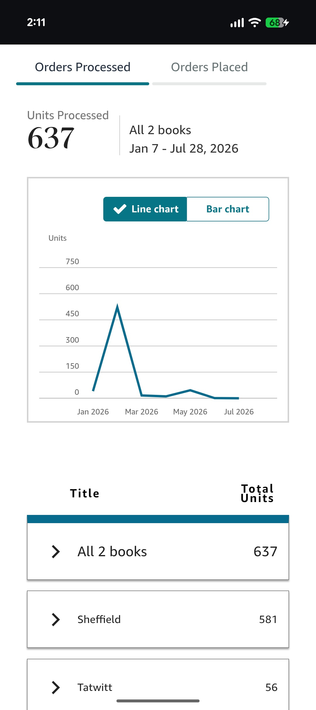
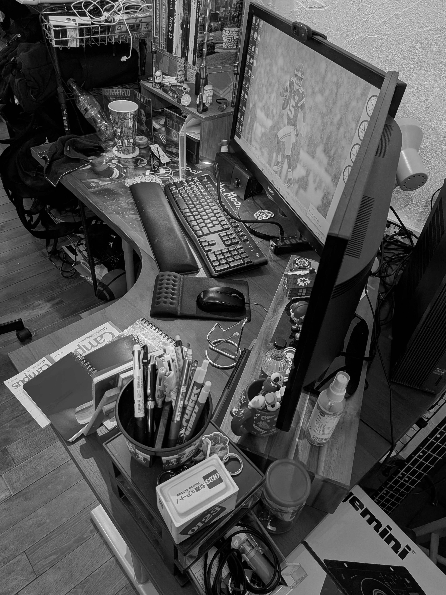
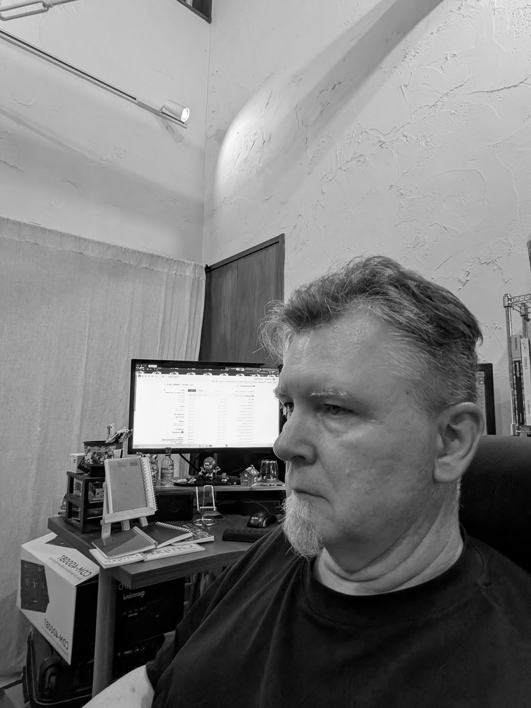

There is a number I check more often than I would like to admit. The trouble is that there is never just one of them, and depending on which I reach for, I am either doing fine or I am a fool. Let me show you what I mean.

The dashboard tells me that since January, across both novels, I have moved six hundred and thirty-seven units. Say that number out loud and it sounds like a modest little success. A man could feel good about six hundred of anything.
Now let me take it apart, the way the quiet 2am version of me always does.
About five hundred of those were free. I ran promotions, gave the books away, watched the download counter spin, and felt, for roughly a day, like something was happening. Then I waited for the reviews, the emails, the read-through, any sign that a single one of those five hundred people had opened the file. Nothing came back. A free download is not a reader. It is a person who took a thing that cost them nothing and will almost certainly never think about it again. I learned the difference between distribution and readership the expensive way, which is to say the free way.
Of the ones who actually paid, a good many bought at ninety-nine cents, during a countdown sale, which is to say they wanted the book at roughly the price of a gumball. I am glad they have it. I am. But I know what that number is and is not.
Which leaves the figure I actually carry around. Strip out the free, strip out the fire-sale, and I have sold somewhere around sixty copies of my books at full price to people who simply decided they were worth it. Sixty. In under a year.
So which number is true? They all are. That is the entire problem. The dashboard will hand me a triumph or a humiliation depending on which column I choose to stare at, and I have stared at all of them. The machine is happy to flatter me with the six hundred and just as happy to gut me with the sixty. I have learned not to trust either one too much, because a number that can be arranged into any story I want is not really telling me anything about the work. It is just telling me what mood I was in when I opened the app.
That is the first thing I wanted to say. Now let me tell you about the two other things that sit beside that number, because the number was never really the hard part.
Three Fronts
The struggle, if I am going to call it that, comes at you from three directions at once, and the cruel part is that they feed each other.
The first is the machine. There is an algorithm somewhere that decides whether a book like mine is ever placed in front of a human being, and it does not know me and owes me nothing. I can do everything right, the ads, the keywords, the categories, and the machine can simply shrug. You are not fighting a critic who hated your book. You are fighting an indifference so total that it never even looked up. That is a strange thing to fight. There is no face on it.
The second front is the one inside my own head. On a good day the voice is quiet. On a bad day it does the math for me before I am even awake. Sixty copies. Fifteen years. Who exactly do you think you are. That voice is very good at its job. It has been practicing on me for a long time.

The third front is the hardest one to write about, so I will just say it plainly. It is the people close to you.
Not strangers. Strangers cost you nothing, because strangers do not care enough to doubt you. It is the people whose belief would actually mean something, the ones near enough to see the ledger, who ask the fair and reasonable question. How is it going, really. When does this start to add up. They do not ask it to wound you. They ask it because they can see the number too, and they love you, and they are trying to square the man they know with the math on the screen.
And it lands harder than any troll ever could, precisely because it comes from someone whose opinion you have decided to trust. A stranger calling your book bad is noise. Someone you love gently wondering if it is time to be practical is a different weight entirely. It gets in under the door.
The three of them together form a kind of loop. A flat sales week makes the inner voice louder. The louder voice makes a loved one's fair question cut deeper. The deeper cut makes the next flat week feel less like bad luck and more like a verdict. Around and around. If you have ever tried to build anything with no guarantee it would work, you know this loop. You have your own version of the number.
Why I Keep Going Anyway
Here is where a lesser essay would tell you to believe in yourself and never give up, and you would close the tab, because you have read that one before and so have I.
I do not have that for you. What I have is smaller and, I think, truer.
I keep going because I have decided, deliberately, that none of those three fronts gets to be the judge. The algorithm measures visibility, not worth. The voice in my head measures fear, not fact. And the people who love me are measuring by the only yardstick they have, money and time, which is a completely reasonable yardstick and also not the one I signed up to be measured by. I did not start writing because it was going to pay. I started because there were stories in me that would not sit down, and there still are, and that has not once depended on the number in the dashboard.
Sixty people read a thing I made and carried it around in their heads for a while. When I was staring at a blank screen three years ago, I would have taken sixty. I would have taken six.

So this is not a success story. I want to be clear about that, because the internet is full of people telling you how they made it, and they are all telling you from the comfortable side, after it worked, when the ending is already known and safe. This is the other kind of dispatch. This is from inside the part where you do not know yet. Where the number is still sixty and the third novel is not finished and the loudest voices are all asking, in their various ways, whether you are sure.
I am not sure. That is the actual condition of the thing. You do the work without the guarantee, or you do not do it at all. Those are the only two options on offer, and I have picked the first one so many mornings in a row that I have more or less stopped noticing it is a choice.
If you are somewhere in your own version of this, fighting your own machine and your own inner voice and the fair questions of people who love you, I do not have a solution for you. I only have company. The number is not the story. It was never going to be the story. The story is that you got up and did the thing again today, with no one clapping, and so did I.
That will have to be enough. Most days, it is.
—Charles